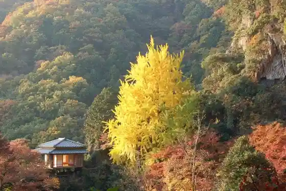
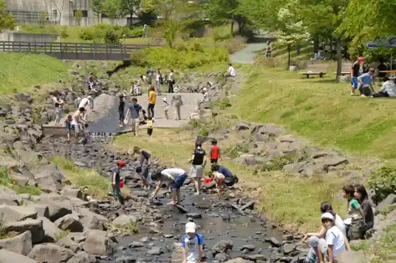
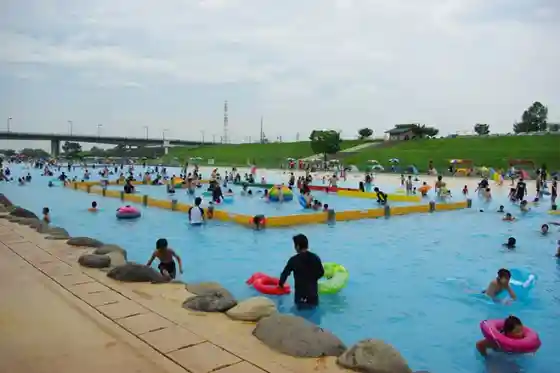
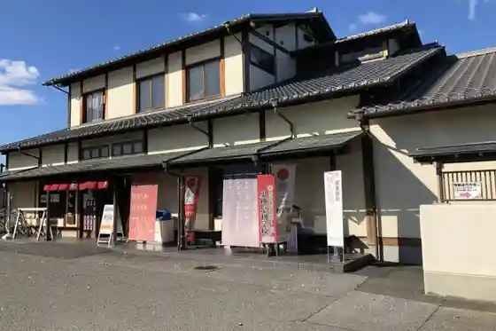

Ashikaga Furawa Park
Ashikaga, Tochigi · 0284-91-4939 · Official / source link
Gyodo Yama Jo In Tera
Ashikaga, Tochigi · 0284-41-8986 · Official / source link

RECAMP Ashikaga (Matsuda Kawa Damu Fureai Plaza)
Ashikaga, Tochigi · Official / source link

Watarase Uota Park (Watarase Beach)
Ashikaga, Tochigi · 0284-40-1787 · Official / source link

Taiheiki Kan
Ashikaga, Tochigi · 0284-43-3000 · Official / source link

Ashikaga Kanko Koryu Kan (Ashi Nabi)
Ashikaga, Tochigi · 0284-73-3631 · Official / source link
Ashikaga Rentasaikuru
Ashikaga, Tochigi · 0284-40-1570 · Official / source link
Toyo Kan
Ashikaga, Tochigi · 0284-62-0136 · Official / source link
Ashikaga Park
Ashikaga, Tochigi · 0284-40-1787 · Official / source link
Kyodo Shiryo Tenjishitsu
Ashikaga, Tochigi · 0284-42-7616 · Official / source link
Furusato Gakushu Museum
Ashikaga, Tochigi · 0284-62-0246 · Official / source link
Koun Do Main Shop
Ashikaga, Tochigi · 0284-21-4964 · Official / source link
Tori Roku Chome Itsukushima Shrine (Nagao Benten)
Ashikaga, Tochigi · 0284-21-9940 · Official / source link
Plaza Hamada
Ashikaga, Tochigi · 0284-41-2301 · Official / source link
Kasahara Sangyo
Ashikaga, Tochigi · 0284-71-3181 · Official / source link
Omugi Kobo Roa Kojo Chokubai Mise
Ashikaga, Tochigi · 0284-64-8847 · Official / source link
Fune Tei Ya Main Shop
Ashikaga, Tochigi · 0284-21-3807 · Official / source link
Tokuzo Tera (Pinpon Tera)
Ashikaga, Tochigi · 0284-41-8621 · Official / source link
Omugi Kobo Roa
Ashikaga, Tochigi · 0120-37-4458 · Official / source link
Sawa no Hall
Ashikaga, Tochigi · 050-5489-5806 · Official / source link
Ashikaga Orihime Shrine
Ashikaga, Tochigi · 0284-22-0313 · Official / source link
Dainichi Chaya
Ashikaga, Tochigi · 0284-55-4554 · Official / source link
JA Ashikaga Aguri Land Ichigo Farm
Ashikaga, Tochigi · 0284-91-0005 · Official / source link
Koun Do (Kodai Kawara Sembei)
Ashikaga, Tochigi · 0284-21-4669 · Official / source link
Cho Hayashiji
Ashikaga, Tochigi · 0284-21-5636 · Official / source link
Banna Tera
Ashikaga, Tochigi · 0284-41-2627 · Official / source link
Ryoso Gen Hanazono
Ashikaga, Tochigi · 0284-41-2338 · Official / source link
Kochu Kitsuke Experience
Ashikaga, Tochigi · 0284-41-8201 · Official / source link
Yagi Fushi Hall
Ashikaga, Tochigi · 0284-71-1214 · Official / source link
Nagusa Hotaru Village
Ashikaga, Tochigi · 0284-41-9977 · Official / source link
Bijinesu Hotel Nyu Daiei
Ashikaga, Tochigi · 0284-73-0027 · Official / source link
Wafu Resutoran Kamogawa
Ashikaga, Tochigi · 0284-72-5252 · Official / source link
Watarase Hashi Nakahashi Hajika Hashi Kashima Hashi Midori Hashi Tanaka Hashi Fuku Sarubashi Kawasaki Hashi Takahashi Ohashi Nado, Watarase Kawa Ni Kaka Ru Chodai Kyoryo Gun
Ashikaga, Tochigi · 0284-41-2331 · Official / source link
Orihime Park
Ashikaga, Tochigi · 0284-22-8256 · Official / source link
Aida Mitsuwoyukari no Mise Men Kappo Naka Kawa
Ashikaga, Tochigi · 0284-41-2322 · Official / source link
Kokoro Tsuin (Jurojin)
Ashikaga, Tochigi · 0284-41-3202 · Official / source link
Watarase Hashi no Kahi
Ashikaga, Tochigi · 0284-43-3000 · Official / source link
Nyumiyako Hotel Bekkan
Ashikaga, Tochigi · 0284-72-3333 · Official / source link
Kabasaki Hachiman Shrine
Ashikaga, Tochigi · 0284-41-3504 · Official / source link
Norimasa Tera
Ashikaga, Tochigi · 0284-21-5797 · Official / source link
Nyumiyako Hotel Ashikaga Honkan
Ashikaga, Tochigi · 0284-71-3333 · Official / source link
Kichijoji
Ashikaga, Tochigi · 0284-42-6006 · Official / source link
Ryotei Soshu Ro
Ashikaga, Tochigi · 0284-21-3101 · Official / source link
Honjo Itsukushima Shrine Bijin Benten
Ashikaga, Tochigi · 0284-42-0525 · Official / source link
Kimono Kitsuke Experience
Ashikaga, Tochigi · 0284-41-8201 · Official / source link
Koko Farm Wainarii
Ashikaga, Tochigi · 0284-42-1194 · Official / source link
Fuku Gen Tera (Hotei Mikoto)
Ashikaga, Tochigi · 0284-21-6990 · Official / source link